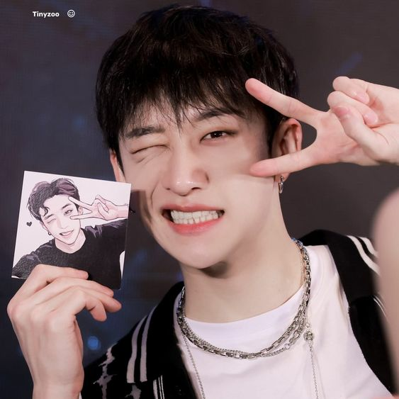
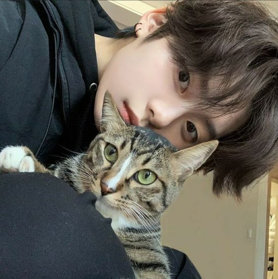

Quem são nossos estudantes?

Christopher Bang
Chan entrou para a JYP após uma audição na Austrália, em 2010. Ele treinou por sete anos, tornando-se amigo próximo de Bambam e Yugyeom, do GOT7, e aparecendo em clipes do Twice e Miss A. Hoje é o líder do Stray Kids e participa também do 3RACHA, um grupo de hip-hop formado por três integrantes, que escreve e produz a maior parte da discografia do Stray.

Lee Minho
Lee Know foi um dos eliminados do reality show, mas hoje faz parte da dancer line (sub-divisão de dançarinos) do grupo e arrasa com seu talento e carisma. Ele é conhecido por sua personalidade única e divertida, além de ter sido dançarino de apoio do BTS. Foi essa experiência que o fez querer se tornar um cantor e brilhar nos palcos.

Lizandra


Joice

Maria

Olivia

Rafaela

Thais